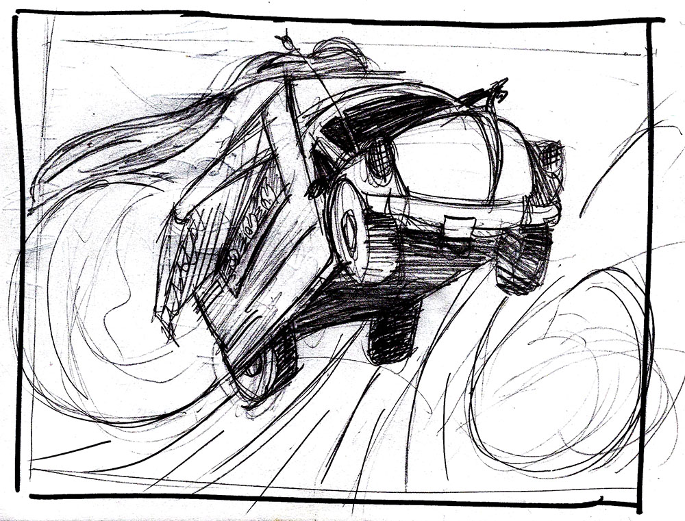

HI, I'M SCOTT LANDELLS™
About Me
Education
I am a graphic design student at Parkland College in Champaign, Illinois. I have experience working with Adobe Photoshop, Illustrator and InDesign. I have currently have a Bachelors of Science Degree in Art from Illinois State University. I will graduate with an Associates Degree in the Spring of 2019. I am looking for graphic design work in Champaign County.
- contemporary
- fun
- creative
Please read myweekly blog as I learn new things about the graphic design world and a lot about myself as a creative person.
Work Experience
I have 20 years experice as a social worker in Champaign County. I have worked for the Men's Emergency Shelter, Urbana School District, Developmental Services Center and Rosecrance Behavioral Health.
Personal Interests
When I am not designing, I like to fish, bicycle, swim and cook. My father and I go fishing every summer in Michigan. There is a poind connected to his backyard. When I am at his house, I love to wake up early in the morning, have a quick breakfast, and then go fishing all day. Large-mouth Bass are my favorite fresh-water fish to catch. Here is a list of fish I like to catch. Fishing in Michigan is the best!
- Large-Mouth Bass (Micropterus salmoides)
- Blue Gill (Delicious!)
- Sunfish
- Crappie (Very Delicious!)
Michigan Fish and How to Catch Them by the Michigan Department of Natural Resources
I am also passionate about volunterring in the community. I have volunteered at a local shelter, theatre and I like to help clean up our local fresh-water streams. I think giving back to the community is important. Everyone should try it!